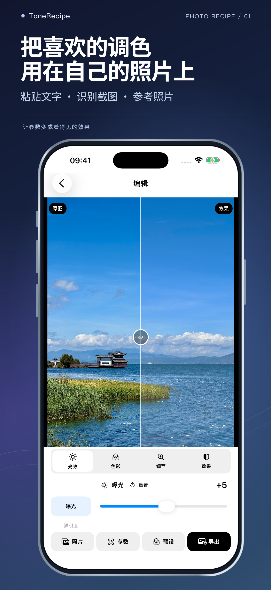
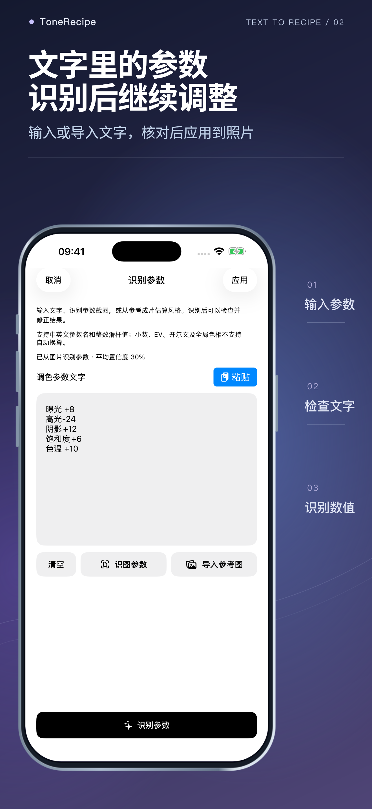
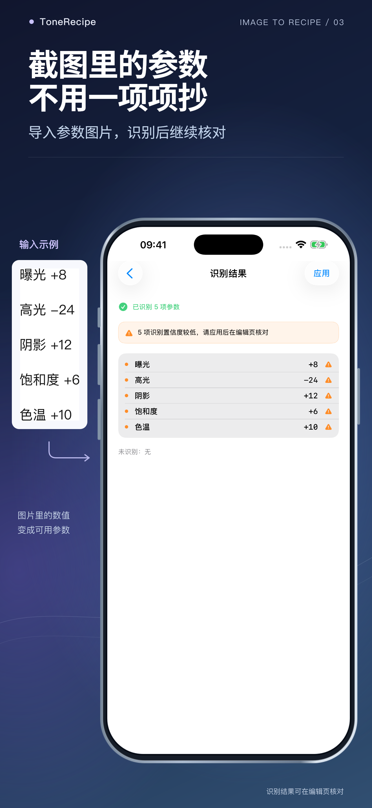

ToneRecipe · iPhone 调色配方
把截图里的调色参数用到自己的照片
ToneRecipe 是一款 iPhone 照片调色 App。它可以识别教程截图里的曝光、高光、对比度等数值，也可以读取粘贴的文字配方。核对后应用到自己的照片，微调并存为下次能直接用的预设。
中国大陆 App Store 美国 App Store需要 iOS 17 或更新版本，支持简体中文和英文。ToneRecipe 目前在中国大陆、美国、英国、加拿大、澳大利亚、新西兰和新加坡上架，商店地区由 Apple 账户设置决定。查看各地区下载入口。



小红书上的调色参数截图，怎么套用到 iPhone 照片？
- 保存一张包含参数名称和数值的教程截图。文字较小时，先裁到参数区域。
- 在 ToneRecipe 首页点「参仿照片」，进入「识别参数」后点「识图参数」，选择刚保存的截图。
- 检查识别结果，点「应用」并选择自己的照片。可以边看前后对比边微调。
- 想给另一张照片用同一套参数，可以点「导出」再选「存为预设」。下次在「预设」里选这套配方，再选择照片。
iPhone 怎么复制博主分享的调色参数，不用逐个调整？
如果博主分享的是文字参数，复制后粘贴到 ToneRecipe「识别参数」页的文本框，再点底部的「识别参数」。检查名称与数值后点「应用」，选择自己的照片，就能一次应用识别出的参数，再按照片情况微调。只有参数截图时，可以使用上面的截图识别步骤。可以先试这三行整数滑杆值。
曝光 +5
对比度 -8
高光 -20完整示例：把一组参数应用到灰天建筑照片
下面是开发者提供的同一张照片，以及 ToneRecipe 1.0.3 应用示例配方后的结果。可以复制完整参数，也可以下载原图尝试，再与自己的照片比较。


复制这组示例参数
滤镜 反差冷色 50
色温 -14
色调 +29
饱和度 +32
自然饱和度 +41
对比度 +19
亮度 +100- 复制上面七行，在「识别参数」页粘贴并点「识别参数」。
- 核对六项调整值，以及「反差冷色」滤镜和强度 50，再点「应用」选择照片。
- 对比原图与结果，按照片亮度和颜色微调；满意后从「导出」进入「存为预设」。
这里使用整数滑杆值，色温 -14 不是开尔文温度。这组参数中的亮度 +100 是这张照片的示例值；换一张照片时，请检查天空和浅色区域是否过亮。相同参数在不同照片、App 版本和编辑器中可能产生不同效果。
只有调色后的参考图怎么办？
参考图可以生成一套用于微调的近似配方。要使用原作者的数值，请找教程里的参数文字或截图。相同数值在不同照片和编辑器里的效果可能不同。文字和截图配方请使用整数滑杆值。
编辑、导出与购买
参数识别和照片编辑在设备上完成。可以分享配方文字和配方卡，也可以导出 JPEG、HEIC 或实况照片。
识别、编辑和预设可免费使用。每个自然月含 5 次成功图片导出。ToneRecipe Pro 通过一次性购买永久解锁无限导出，当地价格以 App 内 Apple 购买页面为准。